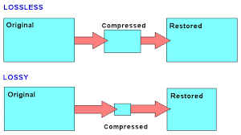

Compressie is een techniek waarmee bestanden kleiner gemaakt worden. Dit kan bijvoorbeeld gaan om foto's, video's, muziek of tekstbestanden. Door compressie nemen deze bestanden minder ruimte in op je computer of telefoon en kunnen ze sneller verstuurd worden via internet.
Er zijn verschillende manieren om bestanden te verkleinen.
Er bestaan twee soorten compressie:
Lossless compressie: Hierbij gaat er geen informatie verloren. De originele gegevens kunnen volledig teruggehaald worden. Dit wordt bijvoorbeeld gebruikt bij tekstbestanden of programma’s.Stel je hebt de tekst aaaaaabbbbcc. Door compressie kan dit korter worden weergegeven: a6b4c2. Dit betekent dat de letter a 6 keer voorkomt de b 4 keer en de c 2 keer.
Afbeeldingen kunnen soms groot zijn. Door compressie kunnen ze veel kleiner worden zonder dat je veel verschil ziet in de kwaliteit. Bijvoorbeeld een foto van 5 MB kan met compressie worden teruggebracht tot 1 MB. Dit maakt het sneller om te uploaden en besparen op opslagruimte.
Dit is een klein voorbeeldplaatje om te laten zien hoe een afbeelding eruitziet.
Compressie gebruik je eigenlijk heel vaak zonder dat je het merkt.
Compressie helpt ons om efficiënter met digitale bestanden om te gaan. Door bestanden kleiner te maken besparen we tijd en ruimte, en kunnen we makkelijker data delen. Er zijn verschillende manieren van compressie, afhankelijk van het soort bestand en het doel.